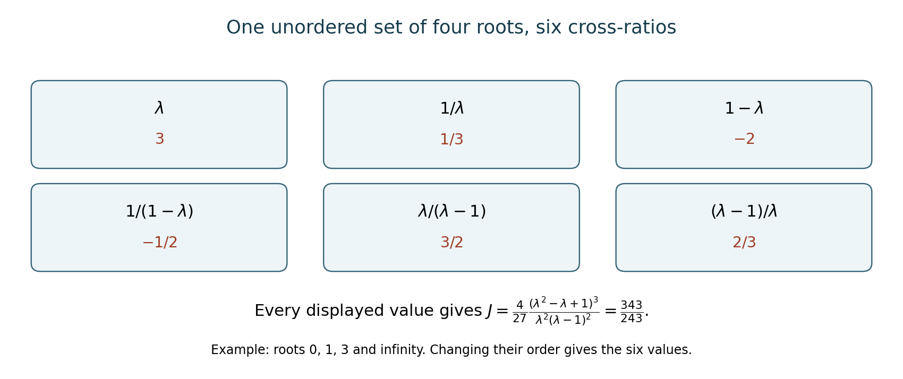
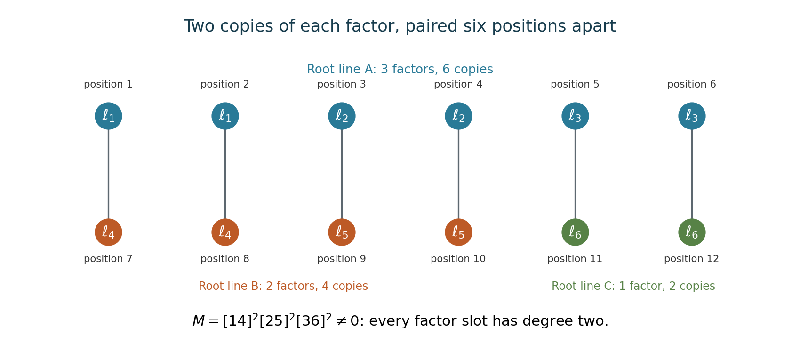

Covariants, averaging and Hilbert finiteness
Written and self-checked by GPT-6.1 Sol (OpenAI) in Codex at Ultra. Original exposition, proofs, exercises and diagrams are CC0.
A form is a polynomial together with a choice of coordinates. An invariant survives a change of coordinates; a covariant produces another form that changes compatibly. We begin with the action, its differential test and complete systems for small binary forms. Averaging then explains why a finite system exists for every polynomial special-linear action, and the nullcone gives a criterion for module finiteness.
The field has characteristic zero throughout; Sections 8–11 and 13 work over the complex numbers as specified there. We use differentiation, polynomial rings and elementary matrix operations. Normalized Haar measure comes from Haar measure on locally compact groups, Theorem 8.3 and Theorem 9.2 (Noncommutative geometry, foliations and index theory). The Hilbert basis theorem, polynomial normality and the strong Nullstellensatz come from Noetherian and Artinian rings, Integral extensions, lying over, going up and going down, and The Nullstellensatz and Jacobson rings (Commutative algebra for geometry).
1. Coordinates, substitution and determinant weight
Write a binary form of degree \(d\) as \[ f(x,y)=\sum_{i=0}^d\binom di a_i x^{d-i}y^i. \] The binomial factors are convenient over a characteristic-zero field. They require separate treatment over the integers in the final lesson.
For \(g\in\operatorname{GL}_2(k)\), fix the left action \[ (g\cdot f)(v)=f(g^{-1}v),\qquad v=(x,y)^{\mathsf t}. \] A polynomial \(C(a,x,y)\), homogeneous of coefficient degree \(\delta\) and variable order \(\omega\), is a covariant of weight \(w\) if
\[ C(g\cdot f,gv)=\det(g)^{-w}C(f,v). \tag{B1} \] An invariant is a covariant of order zero. The inverse determinant in (B1) is part of our convention: it makes classical weights positive for the inverse-substitution action. For the special linear group the determinant factor disappears.
For \(n\) variables, use the same definition with \(g\in\operatorname{GL}_n\). A form of degree \(d\) is \(\sum_{|\alpha|=d}(d!/\alpha!)a_\alpha x^\alpha\). Systems of forms can be graded separately in the coefficients of each member. A contravariant has auxiliary variables transforming in the dual representation; it must not be silently treated as a covariant with the same variable action.
Proposition 1.1 (degree, order and weight). A nonzero bihomogeneous binary special-linear covariant extends to (B1), with \[ w=\frac{d\delta-\omega}{2}\in\mathbb Z_{\geq0}. \]
Proof. The scalar matrix \(\lambda I\) multiplies the coefficients by \(\lambda^{-d}\) and the variables by \(\lambda\). Hence the left side of (B1) scales by \(\lambda^{-d\delta+\omega}\). A determinant weight must therefore satisfy \(2w=d\delta-\omega\).
To prove integrality and nonnegativity without assuming them, use \(\operatorname{diag}(t,t^{-1})\in\operatorname{SL}_2\). Its coefficient action is \(a_i\mapsto t^{2i-d}a_i\). Let \(c(a)\) be the coefficient of \(x^\omega\) in \(C\). It is nonzero: if \(C(a,1,0)\) vanished for every coefficient vector, transitivity of \(\operatorname{SL}_2\) on nonzero vectors, together with covariance, would make \(C\) vanish everywhere. Since \(k\) is infinite, that would make the polynomial zero.
Every coefficient monomial in \(c\) has torus weight \(-\omega\). Its weight is a sum of \(\delta\) integers \(2i-d\), so lies between \(-d\delta\) and \(d\delta\), and is congruent to \(d\delta\) modulo two. Thus \(\omega\leq d\delta\) and \(d\delta-\omega\) is even.
Over an algebraic closure choose \(\lambda\) with \(\lambda^2=\det g\) and write \(g=\lambda s\), \(s\in\operatorname{SL}_2\). Scalar scaling and special-linear covariance now give (B1). The resulting equality of polynomials descends to \(k\). \(\square\)
For a multidegree \((\delta_j)\) in forms of degrees \(d_j\), the same scalar calculation gives \(nw=\sum_jd_j\delta_j-\omega\) in \(n\) variables whenever a determinant-weight covariant exists.
2. A differential test for covariance
Let \(E_0=\left(\begin{smallmatrix}0&1\\0&0\end{smallmatrix}\right)\) and \(F_0=\left(\begin{smallmatrix}0&0\\1&0\end{smallmatrix}\right)\). The simultaneous action on coefficients and variables induces
\[ E=y\frac{\partial}{\partial x} -\sum_{i=1}^d i a_{i-1}\frac{\partial}{\partial a_i}, \qquad F=x\frac{\partial}{\partial y} -\sum_{i=0}^{d-1}(d-i)a_{i+1}\frac{\partial}{\partial a_i}. \tag{B2} \] For a system, sum the coefficient parts over all its forms. The variable parts appear only once.
To check the first formula, substitute \(x-ty\) into \(f\). The coefficient derivative is \[ -(d-i+1)\frac{\binom d{i-1}}{\binom di}a_{i-1}=-i a_{i-1}. \] Meanwhile the simultaneous variable action is \(x\mapsto x+ty\). The second formula follows by exchanging \(x,y\) and reversing the coefficient indices. This derivation fixes the signs; a criterion written for another action convention can have different signs.
Theorem 2.1 (infinitesimal criterion). A polynomial \(C(a,x,y)\) is special-linear invariant under the simultaneous action if and only if \(EC=FC=0\).
Proof. Invariance under the upper and lower unipotent one-parameter subgroups implies these two derivative conditions at \(t=0\).
Conversely, the action of each subgroup on a polynomial is a polynomial in \(t\). Its derivative is the translate of \(EC\), or of \(FC\), by the chain rule and the subgroup law. If the corresponding derivation kills \(C\), that derivative vanishes identically. In characteristic zero a polynomial with zero derivative is constant. Its value at \(t=0\) is \(C\), so \(C\) is invariant under both subgroups.
They generate \(\operatorname{SL}_2(k)\). Gaussian row operations reduce any determinant-one matrix to a diagonal matrix, using these elementary matrices. If \[ U(t)=\begin{pmatrix}1&t\\0&1\end{pmatrix}, \quad L(t)=\begin{pmatrix}1&0\\t&1\end{pmatrix}, \] then \(W(t)=U(t)L(-t^{-1})U(t)=\left(\begin{smallmatrix}0&t\\-t^{-1}&0\end{smallmatrix}\right)\) for \(t\ne0\), and \(W(t)W(1)^{-1}=\operatorname{diag}(t,t^{-1})\). This includes the diagonal matrices in the generated group, proving the criterion. \(\square\)
The proof uses unipotent subgroups and polynomial differentiation, rather than an unstated assertion about connected Lie groups. It works over every characteristic-zero field.
3. Transvectants: contracting two variable pairs
Use independent binary pairs \(v=(x,y)\) and \(u=(X,Y)\). Define \[ \Omega_{v,u}=\partial_x\partial_Y-\partial_y\partial_X. \] For forms \(P,Q\) of orders \(m,n\), fix the normalized transvectant
\[ (P,Q)_r= \frac{(m-r)!(n-r)!}{m!\,n!} \left.\Omega_{v,u}^{\,r}\bigl(P(v)Q(u)\bigr)\right|_{u=v}, \qquad 0\leq r\leq\min(m,n). \tag{B3} \] All constants in later computations refer to (B3); rescaled classical invariants will be identified explicitly.
Expanding the operator gives the usable formula
\[ (P,Q)_r=\frac{(m-r)!(n-r)!}{m!\,n!} \sum_{j=0}^r(-1)^j\binom rj \frac{\partial^rP}{\partial x^{r-j}\partial y^j} \frac{\partial^rQ}{\partial x^j\partial y^{r-j}}. \tag{B4} \]
Theorem 3.1 (covariance of transvection). If \(P,Q\) are covariants of coefficient degrees \(\delta_1,\delta_2\), orders \(m,n\) and weights \(w_1,w_2\), then \((P,Q)_r\) is a covariant of degree \(\delta_1+\delta_2\), order \(m+n-2r\), and weight \(w_1+w_2+r\), unless it is zero.
Proof. The chain rule shows that contracting two derivatives by their alternating determinant picks up a factor \(\det g\) when both variable pairs are replaced by \(gv,gu\): \[ \Omega_{v,u}\bigl(P(gv)Q(gu)\bigr) =\det(g)\,(\Omega_{v,u}(P(v)Q(u)))\big|_{v\mapsto gv,\ u\mapsto gu}. \] This identity is checked by multiplying the two Jacobian matrices; their alternating product is the determinant. The derivatives commute, so iteration gives \(\det(g)^r\). Apply it to the covariance identity for the product of \(P,Q\), then divide by that factor. The diagonal restriction \(u=v\) commutes with simultaneous substitution. This gives determinant exponent \(-(w_1+w_2+r)\). Differentiation removes \(r\) variables from each factor, and coefficient multiplication adds the degrees. The scalar normalization changes none of these assertions. \(\square\)
Exchanging the factors reverses the alternating contraction: \[ (Q,P)_r=(-1)^r(P,Q)_r. \] Thus every odd self-transvectant vanishes. In particular, computing a nonzero \((f,f)_1\) would expose a sign or implementation error.
4. Reading a covariant from its leading coefficient
The computations to follow will give complete systems: every polynomial covariant is a polynomial in the displayed ones. To prove this, we first turn covariance into a problem about a derivation on the coefficient ring.
For a covariant \(C\) of order \(\omega\), write \[ C=c_0x^\omega+c_1x^{\omega-1}y+\cdots+c_\omega y^\omega. \] The coefficient of \(x^\omega\) in \(EC=0\) is
\[ \mathcal D c_0=0,\qquad \mathcal D=\sum_{i=1}^d i a_{i-1}\partial_{a_i}. \tag{B5} \] The leading-coefficient map \(C\mapsto C(a,1,0)\) is injective on the algebra of special-linear covariants, including sums of different orders. Indeed, if that evaluation is zero, covariance and the transitivity of \(\operatorname{SL}_2(k)\) on nonzero vectors make \(C(a,v)=0\) for every \(v\ne0\) and every coefficient vector. A polynomial vanishing there is zero because \(k\) is infinite.
For degrees two, three and four, abbreviate the coefficients by \(a,b,c,d,e\), omitting those not present. Set \[ h=ac-b^2,\qquad t=a^2d-3abc+2b^3. \] Direct differentiation gives \(\mathcal Da=\mathcal Dh=\mathcal Dt=0\). For a cubic also put \[ D=a^2d^2-6abcd+4ac^3+4b^3d-3b^2c^2; \] for a quartic put \[ i=ae-4bd+3c^2,\qquad j=ace+2bcd-ad^2-b^2e-c^3. \] These too are killed by \(\mathcal D\).
Theorem 4.1 (three coefficient kernels). In characteristic zero,
\[ \begin{aligned} \ker(\mathcal D:k [a,b,c]\to k [a,b,c])&=k [a,h],\\ \ker(\mathcal D:k [a,b,c,d]\to k [a,b,c,d]) &\cong k [a,h,t,D]/(a^2D-t^2-4h^3),\\ \ker(\mathcal D:k [a,b,c,d,e]\to k [a,b,c,d,e]) &\cong k [a,h,t,i,j]/(t^2+4h^3-ia^2h+ja^3). \end{aligned} \tag{B6} \] The isomorphisms send the formal generators to the polynomials just defined.
Proof. Invert \(a\), and use \(s=b/a\). Then \(\mathcal Ds=1\). The inverse coordinate substitutions are
\[ b=as,\quad c=h/a+as^2,\quad d=t/a^2+3hs/a+as^3, \tag{B7} \] and, in degree four,
\[ e=i/a+4st/a^2+6hs^2/a+as^4-3h^2/a^3. \tag{B8} \] Use only the available equations in each degree. These substitutions show that the localized polynomial rings have coordinates \[ (a^{\pm1},h,s),\quad (a^{\pm1},h,t,s),\quad (a^{\pm1},h,t,i,s), \] respectively. In these coordinates \(\mathcal D=\partial_s\). Its kernel consists of the polynomials independent of \(s\); this uses characteristic zero.
Expanding the definitions gives
\[ a^2D=t^2+4h^3,\qquad t^2+4h^3-ia^2h+ja^3=0. \tag{B9} \] Here is also a way to verify the second expansion with fewer terms: substitute (B7)–(B8) into the definition of \(j\); it becomes \(j=(ia^2h-t^2-4h^3)/a^3\). An equality after inverting \(a\) is an equality in the original polynomial ring.
Let \(S\) denote the corresponding proposed ring on the right of (B6). Each of the two relations is primitive and linear in its last generator, \(D\) or \(j\). Its leading coefficient, \(a^2\) or \(a^3\), has no common factor with its constant coefficient, since the latter remains a nonzero polynomial modulo \(a\). Gauss’s lemma makes the relation irreducible in the polynomial ring, so \(S\) is a domain. Gauss’s lemma is proved in the algebra lesson Integral extensions, lying over, going up and going down, Proposition 2.3. After inverting \(a\), equations (B7)–(B9) identify \(S [a^{-1}]\) with the localized kernel. Because \(S\) is a domain, this also proves that \(S\) embeds in the original coefficient ring \(R\).
We must check that no denominator in \(a\) creates a new polynomial invariant. The necessary check is the injectivity of \(S/(a)\to R/(a)\).
For the quadratic it is \(k [h]\to k [b,c]\), \(h\mapsto-b^2\), which is injective. For the cubic, \[ S/(a)=k [h,t,D]/(t^2+4h^3), \quad h\mapsto-b^2,\quad t\mapsto2b^3, \quad D\mapsto4b^3d-3b^2c^2. \] Every element has a unique representative \(P(h,D)+tQ(h,D)\), by division by the monic relation in \(t\). The elements \(b,D\) are algebraically independent: over \(k(b)\), the expression for \(D\) solves for \(d\), with \(c\) still free. After substitution, the first summand uses even powers of \(b\), the second odd powers. Their sum is zero only if both polynomials are zero. Thus this map is injective.
For the quartic the same normal form is \(P(h,i,j)+tQ(h,i,j)\), with \[ h=-b^2,\quad t=2b^3,\quad i=-4bd+3c^2,\quad j=2bcd-b^2e-c^3 \] modulo \(a\). Now \(b,i,j\) are algebraically independent. Over \(k(b)\), the equation for \(i\) solves for \(d\), and the equation for \(j\) solves for \(e\), while \(c\) remains free. The even/odd argument in \(b\) again proves injectivity.
Consequently, if \(u\in S\) is divisible by \(a\) in \(R\), its class in \(S/(a)\) is zero, so \(u\in aS\). If \(u/a^N\in S [a^{-1}]\) belongs to \(R\), repeat this observation \(N\) times to obtain \(u/a^N\in S\). Thus \(S [a^{-1}]\cap R=S\). Every element of \(\ker\mathcal D\) lies in that intersection, proving (B6). \(\square\)
The last part of the proof is often called saturation: divisibility seen in the larger ring was already divisibility in the proposed kernel. It is what upgrades a computation on the open set \(a\ne0\) to a global presentation.
5. Quadratics and cubics
The quadratic
Let \(f=ax^2+2bxy+cy^2\). Its basic invariant is \(h=ac-b^2\). The complete covariant algebra is
\[ k [f,h]. \tag{B10} \] To see generation, take a covariant of coefficient degree \(\delta\) and order \(\omega\). Its leading coefficient belongs to \(k [a,h]\) by Theorem 4.1. Select the component of that expression having coefficient degree \(\delta\) and torus weight \(-\omega\). The weights of \(a,h\) are \(-2,0\); their coefficient degrees are \(1,2\). Replacing \(a\) by \(f\) and \(h\) by \(h\) therefore gives a covariant of the same degree and order with the same leading coefficient. Injectivity proves equality. Algebraic independence of \(a,h\) proves that (B10) has no relation.
The matrix of the quadratic is \[ Q=\begin{pmatrix}a&b\\b&c\end{pmatrix}. \] Inverse substitution sends \(Q\) to \(g^{-\mathsf t}Qg^{-1}\); its determinant \(h\) scales by \(\det(g)^{-2}\), as required by weight two. If \(f=(u_1x+v_1y)(u_2x+v_2y)\), coefficient comparison gives
\[ h=-\tfrac14(u_1v_2-v_1u_2)^2. \tag{B11} \] Thus \(h=0\) is exactly the repeated-root locus over an algebraic closure. For the usual univariate coefficients the discriminant is \(-4h\).
The cubic
Write \[ f=ax^3+3bx^2y+3cxy^2+dy^3,\quad H=(f,f)_2,\quad T=(f,H)_1,\quad \Delta=(H,H)_2. \] Formula (B4) gives
\[ H=2\bigl((ac-b^2)x^2+(ad-bc)xy+(bd-c^2)y^2\bigr), \qquad \Delta=-2D. \tag{B12} \] The leading coefficients of \(f,H/2,T,\Delta\) are \(a,h,t,-2D\). Their orders are \(3,2,3,0\), and their coefficient degrees are \(1,2,3,4\).
Theorem 5.1 (the cubic system). The covariant algebra is generated by \(f,H,T,\Delta\), with exactly one relation:
\[ 2T^2+H^3+\Delta f^2=0. \tag{B13} \]
Proof. The left side is a covariant, and its leading coefficient is \(2t^2+8h^3-2Da^2=0\) by (B9). Leading-coefficient injectivity proves (B13), including every coefficient of the forms.
For generation, Theorem 4.1 expresses the leading coefficient of any covariant in \(a,h,t,D\). The torus weights are minus the orders just listed. As in the quadratic case, select its coefficient-degree and torus-weight component, then replace these four generators by \(f,H/2,T,-\Delta/2\). Every monomial has the desired order and degree, so injectivity identifies the resulting covariant with the original one. Finally, the kernel presentation in (B6) proves that every relation is a multiple of (B13), after the indicated rescaling. \(\square\)
For \(f=x^3+y^3\), the normalization gives \[ H=2xy,\quad T=x^3-y^3,\quad \Delta=-2. \] Relation (B13) becomes \(2(x^3-y^3)^2+8x^3y^3-2(x^3+y^3)^2=0\). For \(f=x^2y\), remembering that \(b=1/3\), it gives \[ H=-\tfrac29x^2,\quad T=\tfrac2{27}x^3,\quad\Delta=0. \]
If \(f=\ell_1\ell_2\ell_3\), with \(\ell_r=u_rx+v_ry\) and \([rs]=u_rv_s-v_ru_s\), then
\[ \Delta=\tfrac2{27}[12]^2 [13]^2 [23]^2. \tag{B14} \] Here is a proof that fixes both the root meaning and the constant. For distinct root lines, a projective linear transformation sends their ordered triple to the root lines of \(xy(x-y)\). This follows by sending the first two lines to the coordinate axes, then using a diagonal matrix to send the third to \(x-y\). On replacing \(\ell_r\) by \(\lambda_r\ell_r\), both sides of (B14) scale by \((\lambda_1\lambda_2\lambda_3)^4\); under inverse substitution both have determinant weight six. It is therefore enough to check \(xy(x-y)\). Its coefficients are \(a=d=0,b=1/3,c=-1/3\), so \(D=-1/27\) and \(\Delta=2/27\); the bracket product squared is one. This proves (B14) on the dense open set of triples with distinct root lines, and therefore as a polynomial identity everywhere. The ordinary discriminant is \((27/2)\Delta\). In particular, its vanishing means precisely that the cubic has a repeated root.
6. Quartics and the cross-ratio of four roots
Write \[ f=ax^4+4bx^3y+6cx^2y^2+4dxy^3+ey^4,\quad H=(f,f)_2,\quad T=(f,H)_1. \] Use the explicitly rescaled invariants
\[ i=\tfrac12(f,f)_4=ae-4bd+3c^2,\qquad j=\tfrac16(f,H)_4=ace+2bcd-ad^2-b^2e-c^3. \tag{B15} \] The factors \(1/2\) and \(1/6\) matter: applying (B3) without them would give \(2i,6j\), and would change the usual discriminant formula.
The Hessian in this normalization is
\[ \begin{split} H=2\bigl(& (ac-b^2)x^4+2(ad-bc)x^3y\\ &+(ae+2bd-3c^2)x^2y^2 +2(be-cd)xy^3+(ce-d^2)y^4\bigr). \end{split} \tag{B16} \] Its leading coefficient is \(2h\), and that of \(T\) is \(t\).
Theorem 6.1 (the quartic system). The covariant algebra has generators \(f,H,T,i,j\) and exactly one relation:
\[ 2T^2+H^3-if^2H+2jf^3=0. \tag{B17} \]
Proof. Its leading coefficient is twice the quartic relation in (B9). All terms are covariants of coefficient degree six and order twelve, so leading-coefficient injectivity proves the identity. For generation and the absence of further relations, use the quartic kernel in Theorem 4.1. Its generators have coefficient degrees \(1,2,3,2,3\) and torus weights \(-4,-4,-6,0,0\). Select the required degree and weight component, and lift by \(a,h,t,i,j\mapsto f,H/2,T,i,j\). This repeats the already proved argument for the cubic. \(\square\)
In particular the quartic invariant ring is \(k [i,j]\): a covariant of order zero can only use the generators of order zero. The kernel proof also shows that \(i,j\) are algebraically independent.
The ordinary discriminant is
\[ \operatorname{disc}(f)=256(i^3-27j^2). \tag{B18} \] To prove this, factor \(f=\prod_{r=1}^4\ell_r\). The root discriminant \(\prod_{r<s}[rs]^2\) has coefficient degree six and determinant weight twelve. On the open set of four distinct root lines, projective substitution and rescaling of the factors reduce the calculation to \[ f_\lambda=xy(x-y)(x-\lambda y),\qquad \lambda\ne0,1. \] Formula (B15) gives \[ i=\frac{\lambda^2-\lambda+1}{12},\qquad j=\frac{(\lambda+1)(2\lambda^2-5\lambda+2)}{432}. \] Substitution yields \(256(i^3-27j^2)=\lambda^2(1-\lambda)^2\), which is also its bracket product squared. Both sides transform with the same weight and degree, so they agree on that open set, and polynomial density proves (B18) for every quartic. Consequently the discriminant vanishes exactly on the repeated-root locus.
For a quartic with four distinct roots, define the absolute invariant \[ J(f)=\frac{i^3}{i^3-27j^2}. \] It is unchanged by \(\operatorname{GL}_2\) and by multiplying the form by a nonzero scalar. For the displayed normal form,
\[ J(\lambda)=\frac4{27} \frac{(\lambda^2-\lambda+1)^3}{\lambda^2(\lambda-1)^2}. \tag{B19} \] This equals the conventional elliptic \(j\)-invariant divided by \(1728\). To check the normalization, the double cover of the root line is \(y^2=x(x-1)(x-\lambda)\). Put \(x=X+(\lambda+1)/3\), \(Y=2y\). Expansion gives \[ Y^2=4X^3-g_2X-g_3,\qquad g_2=\frac43(\lambda^2-\lambda+1),\quad g_3=\frac4{27}(\lambda+1)(2\lambda^2-5\lambda+2). \] Here \(g_2^3-27g_3^2=16\lambda^2(\lambda-1)^2\). The conventional definition \(j_{\rm ell}=1728g_2^3/(g_2^3-27g_3^2)\) therefore gives exactly \(1728J(\lambda)\).
Proposition 6.2 (separation of the four-root configurations). Over an algebraic closure, two quartics with nonzero discriminant have the same \(J\) if and only if their unordered root sets are projectively equivalent. Equivalently, they differ by a linear change of variables and a nonzero scalar.
Proof. The six possible values of the cross-ratio of an unordered four-point configuration are
\[ \lambda,\quad1-\lambda,\quad1/\lambda,\quad 1/(1-\lambda),\quad\lambda/(\lambda-1),\quad(\lambda-1)/\lambda. \tag{B20} \] For example, interchanging two entries in an ordered cross-ratio yields \(1-\lambda\) or \(1/\lambda\); these two operations generate the list. The other permutations leave one of these six values. Conversely, choosing three of the points as \(0,1,\infty\) gives precisely these possibilities for the fourth, by the unique projective transformation taking one ordered triple to another.
Formula (B19) is unchanged by the two generating transformations, by direct substitution. For a proof of the converse that includes exceptional configurations with extra symmetries, use a variable \(z\). Clearing denominators in \(J(z)=J(\lambda)\) gives the degree-six polynomial \[ P_\lambda(z)= \lambda^2(\lambda-1)^2(z^2-z+1)^3 -(\lambda^2-\lambda+1)^3z^2(z-1)^2. \] For a generic \(\lambda\) its six distinct roots are the entries of (B20), and its leading coefficient is \(\lambda^2(\lambda-1)^2\). Hence
\[ P_\lambda(z)=\lambda^2(\lambda-1)^2 \prod_{\rho\text{ in }(20)}(z-\rho) \tag{B21} \] as an identity in \(k(\lambda)[z]\). The generic argument proves equality of rational functions, so it specializes for every \(\lambda\ne0,1\). The repetitions in the product then give the correct multiplicities at special values. Thus equality of \(J\) forces the other cross-ratio to be in (B20). The description of ordered triples proves projective equivalence. The reverse implication was invariance. \(\square\)
Over a field that is not algebraically closed, \(J\) separates geometric orbits; it does not assert that the required transformation has coefficients in that field. This distinction already occurs for quadratics.
For \(x^4+y^4\) one has \(i=1,j=0\), so \(J=1\); it is a harmonic configuration. For \(x^3y\), \(b=1/4\) and the other coefficients vanish, giving \(i=j=0\) and zero discriminant. For distinct roots, \(j=0\) describes the harmonic configurations: in the normal form it means \(\lambda\in\{-1,2,1/2\}\). Likewise \(i=0\) means \(\lambda^2-\lambda+1=0\), the equianharmonic configurations. Formula (B21) accounts for the smaller numbers of distinct cross-ratios in both cases.

The six displayed values form one orbit under (B20), and (B19) has the same value at each. This illustrates Proposition 6.2 at a configuration without extra symmetry; the polynomial identity (B21) also covers the exceptional harmonic and equianharmonic orbits. Editable diagram.
7. Determinants and mixed variables
For vector columns \(v_1,\ldots,v_m\in\mathbb C^n\), write \[ [i_1\cdots i_n]=\det(v_{i_1},\ldots,v_{i_n}). \] Multiplication of the matrix by \(g\) multiplies every bracket by \(\det g\), so these are special-linear invariants. For exactly as many vectors as coordinates, the following matrix-orbit argument determines the invariant ring directly.
For a dual vector \(\alpha\), the pairing \(\alpha(v)\) is invariant under \(v\mapsto gv,\ \alpha\mapsto\alpha g^{-1}\). Determinants of \(n\) dual rows instead scale by \(\det(g)^{-1}\). In symbolic notation, the letters of a form are dual rows and its ordinary variables are vector columns. Auxiliary dual variables describe contravariants. Polynomials depending on several sorts of auxiliary variables are called concomitants. These transformation rules keep the variable sorts distinct.
For exactly \(n\) vector columns, bracket generation has a short direct proof. If \(F\) is invariant, define \(h(t)=F(\operatorname{diag}(t,1,\ldots,1))\). On invertible matrices, two matrices have the same determinant exactly when one is obtained from the other by left multiplication by a special-linear matrix. Thus \(F(X)=h(\det X)\) there. Since \(h\) is polynomial and invertible matrices form a dense open set, the equality holds for all \(X\). Consequently
\[ \mathbb C [\operatorname{Mat}_n]^{\operatorname{SL}_n}=\mathbb C [\det X]. \tag{H1} \] For \(n=2\) this proves the invariant ring of a pair of vectors is \(\mathbb C [[12]]\).
In Sections 8–11 put \(G=\operatorname{SL}_n(\mathbb C)\), let \(W\) be a finite-dimensional polynomial representation, and set \(A=\mathbb C [W]\), with \((gF)(w)=F(g^{-1}w)\). Each \(A_d\) is a finite-dimensional polynomial representation. Matrix entries of the representation are regular functions on \(G\); inverse matrix entries are polynomial there because \(g^{-1}=\operatorname{adj}(g)\).
8. Compact averaging and the unitary trick
Theorem 8.1 (compact complete reducibility). Every finite-dimensional continuous complex representation of a compact group \(K\) has an invariant positive-definite Hermitian inner product. Every invariant subspace has an invariant complement.
Proof. Start with any positive-definite Hermitian form \(\langle\ ,\ \rangle_0\), and normalized Haar measure \(\mu\). On a compact group this measure is also right invariant: the right translate of a left Haar measure is left Haar, has the same total mass, and hence equals it by uniqueness. Define \[ \langle v,w\rangle_K=\int_K \langle kv,kw\rangle_0\,d\mu(k). \] It is Hermitian and invariant, by right translation in the integral. For \(v\ne0\), the continuous positive function \(\langle kv,kv\rangle_0\) has a positive minimum on \(K\); its integral is positive. If \(U\) is invariant, unitarity makes its orthogonal complement invariant: for \(v\perp U\) and \(u\in U\), \(\langle kv,u\rangle_K=\langle v,k^{-1}u\rangle_K=0\). Splitting successively proves complete reducibility. \(\square\)
For \(G=\operatorname{SL}_n(\mathbb C)\), take \[ K=\operatorname{SU}(n)=\{g:g^*g=I,\ \det g=1\}. \] It is closed and bounded in a finite-dimensional real vector space, hence compact.
Lemma 8.2 (density of the unitary subgroup). A regular function on \(G\) that vanishes on \(K\) is zero. The same holds for a holomorphic function.
Proof. The real Lie algebra \(\mathfrak k=\{X:X^*=-X,\ \operatorname{tr}X=0\}\) has complex span \(\mathfrak{sl}_n(\mathbb C)\). Indeed every trace-zero matrix is the sum of a skew-Hermitian trace-zero matrix and \(i\) times another one, by separating its Hermitian and skew-Hermitian parts. Choose a real basis \(X_1,\ldots,X_{n^2-1}\) of \(\mathfrak k\); it is a complex basis of that complex span.
The holomorphic map \[ \Phi(z_1,\ldots,z_{n^2-1}) =\exp(z_1X_1)\cdots\exp(z_{n^2-1}X_{n^2-1}) \] has invertible derivative at zero, so the complex inverse-function theorem gives a complex open neighbourhood of the identity in its image. For real \(z_j\), its image lies in \(K\). If \(P\) vanishes on \(K\), \(P\circ\Phi\) vanishes on a real open box. Applying the one-variable identity theorem to one coordinate at a time makes it zero on a complex neighbourhood of zero. Hence \(P\) vanishes on a complex open neighbourhood in \(G\).
The group \(G\) is connected: elementary row operations express its matrices as products of elementary unipotent matrices and determinant-one diagonal matrices; the latter are products of diagonal \(2\times2\) blocks, themselves products of elementary matrices by the explicit calculation in Section 2. Each elementary subgroup is the image of the connected plane \(\mathbb C\), and products give paths to the identity. Holomorphic continuation on this connected complex manifold now proves \(P=0\). The case \(n=1\) is immediate. \(\square\)
Theorem 8.3 (the unitary trick). Every finite-dimensional polynomial representation of \(G\) is completely reducible.
Proof. First, a \(K\)-invariant subspace \(U\) is \(G\)-invariant. For \(u\in U\) and a linear functional \(\ell\) vanishing on \(U\), the regular function \(g\mapsto\ell(gu)\) vanishes on \(K\), and hence on \(G\) by Lemma 8.2. Therefore \(gu\in U\).
Given a \(G\)-invariant subspace, Theorem 8.1 supplies a \(K\)-invariant complement; the preceding argument makes that complement \(G\)-invariant. Repeating in finite dimension gives a direct sum of irreducibles. \(\square\)
The passage from \(K\) to \(G\) uses holomorphic matrix coefficients. It does not apply to an arbitrary continuous representation of the underlying real group \(G\).
9. The Reynolds projection
Let \(B=A^G\). Degree by degree, define
\[ \rho(F)=\int_K kF\,d\mu(k). \tag{H2} \] The integral is just integration of the finitely many coordinates in \(A_d\), not integration over an infinite-dimensional space.
Theorem 9.1 (Reynolds). The map \(\rho:A\to B\) is the unique degree-preserving, \(G\)-equivariant projection onto \(B\). It satisfies
\[ \rho(bF)=b\rho(F)\quad(b\in B),\qquad \rho(b)=b. \tag{H3} \]
Proof. Translation in (H2) makes its image \(K\)-fixed, hence \(G\)-fixed by density. Averaging a fixed vector gives that vector, so it is a projection. It preserves degrees. Left and right invariance of Haar measure make it commute with \(K\), and density makes this commutation hold with \(G\) on every finite-dimensional degree piece. Pulling the \(K\)-fixed factor \(b\) out of the integral proves (H3).
For uniqueness, use Theorem 8.3 on each \(A_d\). Any equivariant map to the trivial representation kills every nontrivial irreducible: a nonzero map from an irreducible to a trivial representation would be injective, forcing that irreducible to be trivial. On the sum of trivial summands a projection onto \(B_d\) is the identity. These two conditions determine it uniquely. \(\square\)
Thus a Reynolds projection is more than a linear choice of a complement. Its invariant-linearity is what permits the next degree induction.
10. Hilbert finiteness and normality
Theorem 10.1 (Hilbert finiteness). For every finite-dimensional polynomial representation \(W\) of \(\operatorname{SL}_n(\mathbb C)\), the invariant ring \(B=\mathbb C [W]^G\) is generated by finitely many homogeneous invariants.
Proof. Let \(I=A\,B_+\) be the ideal generated by all positive-degree homogeneous invariants. The polynomial ring \(A\) is Noetherian by the Hilbert basis theorem. Hence \(I\) has finitely many ideal generators. Each is a finite \(A\)-linear combination of elements of \(B_+\), so collecting the finitely many invariants occurring in those expressions gives homogeneous invariants \(f_1,\ldots,f_s\) generating \(I\).
If \(f\in B\) is homogeneous of positive degree \(d\), write \(f=\sum_i a_if_i\). Taking degree \(d\) components lets us choose \(a_i\) homogeneous of degree \(d-\deg f_i\), omitting a term when this number is negative. Apply (H3): \[ f=\rho(f)=\sum_i\rho(a_i)f_i. \] Every nonzero \(\rho(a_i)\) has degree strictly less than \(d\). Induction on \(d\), starting with \(B_0=\mathbb C\), expresses \(f\) as a polynomial in the \(f_i\). Every invariant is a sum of homogeneous invariants, because the action preserves degree. Thus \(B=\mathbb C [f_1,\ldots,f_s]\). \(\square\)
This proof establishes existence; the basis theorem does not supply a numerical bound on the degrees of the chosen \(f_i\).
Corollary 10.2 (normality). \(B\) is a Noetherian normal domain.
Proof. It is a finite-type algebra over a field, hence Noetherian, and a subring of the domain \(A\). If \(z\in\operatorname{Frac}B\) is integral over \(B\), the same monic equation makes it integral over \(A\). Polynomial rings are normal, by Integral extensions, lying over, going up and going down, Proposition 2.3, so \(z\in A\). Since it is a fraction of invariant elements, \(z\) is fixed by \(G\). Hence \(z\in B\). \(\square\)
For example, the quadratic calculation in Section 5 gives \(\mathbb C [\operatorname{Sym}^2(\mathbb C^2)^*]^{\operatorname{SL}_2} =\mathbb C [ac-b^2]\). Applying Theorem 10.1 to coefficient variables together with auxiliary vector or dual-vector variables proves finite generation for their covariant and concomitant algebras as well.
11. Equations for the nullcone give module finiteness
Define the nullcone \[ \mathcal N=\{w\in W:b(w)=0\text{ for every }b\in B_+\}. \] Theorem 10.1 makes this an algebraic set defined by finitely many equations.
Theorem 11.1 (Hilbert’s nullcone finiteness theorem). Suppose homogeneous positive-degree invariants \(q_1,\ldots,q_r\) have common zero set \(\mathcal N\) in \(W\). Then \(B\) is a finite module over \(\mathbb C [q_1,\ldots,q_r]\).
Proof. Choose homogeneous algebra generators \(b_1,\ldots,b_s\) for \(B\). Each \(b_i\) vanishes on the common zero set of the \(q_j\). The Nullstellensatz gives an integer \(N_i>0\) and an expression \[ b_i^{N_i}=\sum_j a_{ij}q_j\quad(a_{ij}\in A). \] Applying \(\rho\) makes the coefficients invariant, so \(b_i^{N_i}\in(q_1,\ldots,q_r)B\). Thus \(B/(q_1,\ldots,q_r)B\) is spanned by the finitely many monomials \(\prod_i b_i^{e_i}\), \(0\leq e_i<N_i\). Choose homogeneous lifts \(u_1,\ldots,u_t\) of a homogeneous vector-space basis of that quotient.
For a homogeneous \(b\in B_d\), subtract a complex linear combination of the \(u_i\) of degree \(d\) to obtain an element of \((q_1,\ldots,q_r)B\). Write that remainder as \(\sum_jq_jc_j\), choosing \(c_j\) of degree \(d-\deg q_j<d\). Induction on degree expresses every \(c_j\), and hence \(b\), in the \(\mathbb C [q_1,\ldots,q_r]\)-module generated by the \(u_i\). This proves module finiteness. \(\square\)
This is stronger than the assertion that some finite generating set exists: any homogeneous invariant equations cutting out the nullcone give an integral, finite subalgebra. It does not assert that the \(q_j\) are algebraically independent.
12. Finite generation and a finite set of integer solutions
Lemma 12.1 (Dickson). Every subset of \(\mathbb N^m\), ordered componentwise, has finitely many minimal elements. More strongly, every infinite sequence in \(\mathbb N^m\) contains indices \(r<s\) with \(v_r\leq v_s\).
Proof. A sequence of nonnegative integers has an infinite nondecreasing subsequence. If some value occurs infinitely often, take that constant subsequence. Otherwise every bounded set of values occurs at only finitely many indices, so choose successively larger values at larger indices. For the assertion in \(\mathbb N^m\), argue by induction on \(m\). Take an infinite subsequence nondecreasing in the last coordinate, and apply induction to the first \(m-1\) coordinates. The resulting pair is comparable in every coordinate. An infinite set of distinct minimal elements would give an infinite sequence without such a pair. \(\square\)
Theorem 12.2 (Gordan’s lemma). For an integer matrix \(A\), the additive monoid \[ M=\{v\in\mathbb N^m:Av=0\} \] is generated by its finitely many minimal nonzero elements.
Proof. They form an antichain, so Lemma 12.1 makes them finite. For \(v\in M\setminus\{0\}\), the finite box \(\{u:0\leq u\leq v\}\) contains a minimal nonzero solution \(b\). It is minimal in all of \(M\), since any smaller solution would still belong to the box. Linearity gives \(A(v-b)=0\), and \(v-b\) is nonnegative. Repeating subtraction strictly decreases the sum of the coordinates and therefore terminates at zero. The subtracted elements express \(v\) as the required sum. \(\square\)
The integer solutions record possible exponent patterns in products of determinants. It does not by itself prove finiteness when the number of symbolic letters is allowed to grow; that additional reduction must be supplied.
Theorem 12.3 (Gordan’s finiteness theorem). The covariant algebra of a finite system of binary forms over a characteristic-zero field is finitely generated.
Proof. Over \(\mathbb C\), apply Theorem 10.1 to the polynomial ring in all coefficient variables and \(x,y\). The special linear group acts linearly on this finite-dimensional space of variables. Its invariant ring is exactly the covariant algebra. The auxiliary vector variables are part of the representation, so the conclusion concerns the full covariant algebra.
To pass to any characteristic-zero field, first work over \(\mathbb Q\). In each total degree the covariant subspace is the simultaneous kernel of the two rational matrices for \(E,F\) in (B2). Extension of scalars commutes with that kernel, since it is the solution space of finitely many linear equations. Finite generation over \(\mathbb C\) gives a bound \(N\) on the total degrees of a set of generators. Choose a rational basis of the covariant spaces through degree \(N\), and let \(B_0\) be the algebra they generate. In every degree, the quotient of the rational covariant space by the corresponding component of \(B_0\) becomes zero after tensoring with \(\mathbb C\); hence it was zero. Thus \(B_0\) is the rational covariant algebra. Tensoring with \(k\), and applying the same kernel argument in each degree, proves the theorem over \(k\). \(\square\)
This is the Reynolds-and-Hilbert argument of Sections 9–10. Gordan’s original proof instead reduces iterated transvectants and uses finiteness of their admissible exponent patterns. Kung and Rota’s The invariant theory of binary forms, Section 6, gives two constructive symbolic proofs; their Section 6.4, Proposition 6.3 and Lemma 6.6, treats the integer-solution lemma. The kernel argument in Sections 4–6 supplies an independent completeness proof for the small forms.
13. The nullcone of binary forms
For a binary \(d\)-ic, the root formulation has a complete elementary proof. We need first a fact about symmetric root expressions.
Lemma 13.1 (descending a root expression). Let \[ f(x,y)=\prod_{\nu=1}^d(u_\nu x+v_\nu y) =\sum_{r=0}^d c_rx^{d-r}y^r. \] A polynomial in the \(u_\nu,v_\nu\) that is symmetric in the \(d\) pairs and homogeneous of degree \(q\) in each pair is a unique polynomial, homogeneous of degree \(q\), in \(c_0,\ldots,c_d\). This assertion and its proof hold with coefficients in any commutative ring, including \(\mathbb Z\).
Proof. Set all \(u_\nu=1\). The resulting polynomial \(P(v_1,\ldots,v_d)\) is symmetric and has degree at most \(q\) in each \(v_\nu\). Use the usual leading-monomial proof of the fundamental theorem of symmetric polynomials, with lexicographic order \(v_1>\cdots>v_d\). A leading monomial has exponents \(\alpha_1\geq\cdots\geq\alpha_d\), since exchanging a larger later exponent with an earlier smaller one would give a larger monomial. Subtract its coefficient times \[ e_1^{\alpha_1-\alpha_2}e_2^{\alpha_2-\alpha_3} \cdots e_d^{\alpha_d}. \] This product has the chosen leading monomial with coefficient one. It uses \(\alpha_1\leq q\) elementary-symmetric factors, and has degree at most \(q\) in each variable. The subtraction therefore stays within the finite set of possible monomials of individual degree at most \(q\), and strictly lowers the leading monomial. It terminates without division by any integer or coefficient.
For \(u_\nu\ne0\), put \(z_\nu=v_\nu/u_\nu\). Homogeneity gives the original polynomial as \((\prod u_\nu)^qP(z_1,\ldots,z_d)\). Here \(c_0=\prod u_\nu\) and \(c_r=c_0e_r(z)\). A term using \(h\leq q\) elementary-symmetric factors becomes their corresponding product of \(c_r\)’s times \(c_0^{q-h}\). This is a homogeneous coefficient polynomial of degree \(q\). The equality in the localization where the \(u_\nu\) are inverted is a polynomial equality before localization: multiplication by a monomial in polynomial variables is injective over any coefficient ring.
For uniqueness, distinct products of the elementary symmetric functions have distinct leading monomials, given by their successive cumulative exponents, and leading coefficient one. They are therefore linearly independent over any coefficient ring. A homogeneous relation of degree \(q\) in the \(c_r\)’s, evaluated at every \(u_\nu=1\), becomes a relation between these products in \(c_1=e_1,\ldots,c_d=e_d\); the power of \(c_0\) in each term was fixed by total degree. Every coefficient is zero. Different coefficient degrees give different degrees in each root pair, so the entire coefficient-to-root substitution is injective as well. \(\square\)
Theorem 13.2 (binary nullcone). A binary form belongs to the nullcone for \(\operatorname{SL}_2(\mathbb C)\) if and only if it has a root of multiplicity strictly greater than \(d/2\). The zero form belongs to the nullcone.
Proof. If a nonzero form has such a root, change coordinates so its repeated factor is \(x^m\), \(m>d/2\). Under inverse substitution by \(\operatorname{diag}(t^{-1},t)\), every monomial \(x^ry^{d-r}\) occurring in it scales by \(t^{2r-d}\), with \(r\geq m\). Thus the transformed coefficient vector tends to zero as \(t\to0\). Every homogeneous positive-degree invariant is constant along this transformation and continuous at zero, so its value on the form is zero.
Conversely, factor a nonzero form into \(d\) nonzero linear factors, and assume no root line occurs more than \(d/2\) times. Make two copies of each factor index, and arrange the \(2d\) copies so that indices with the same root line form consecutive blocks. Every block has length at most \(d\). Pair position \(r\) with position \(r+d\), for \(1\leq r\leq d\). Two paired positions cannot belong to the same block, so the bracket of their root covectors is nonzero.
The product \(M\) of these \(d\) brackets is therefore nonzero at this tuple of root covectors. Each original factor index occurs twice, so \(M\) has degree two in each root pair. Consider
\[ \prod_{\sigma\in S_d}(T-\sigma M) =T^{d!}+\sum_{j=1}^{d!}Q_jT^{d!-j}. \tag{H4} \] Each \(Q_j\) is symmetric in the root pairs, has degree \(2j\) in each pair, and is special-linear invariant, since every bracket is. Lemma 13.1 writes it as a coefficient polynomial \(I_j(f)\), homogeneous of positive degree \(2j\). That coefficient polynomial is invariant: the intertwining equality follows on every factored form, and every binary form factors over \(\mathbb C\), so it holds on every coefficient vector.
At least one \(Q_j\) is nonzero at the chosen tuple. Otherwise (H4) would specialize to \(T^{d!}\), whose only root is zero, contradicting the nonzero root \(M\). Hence some positive-degree invariant \(I_j\) is nonzero at \(f\), and \(f\notin\mathcal N\). \(\square\)
For cubics the threshold is two: the nullcone is the double-root locus, equivalently \(\Delta=0\). For quartics it is three. In Section 6 the quartic invariant ring is \(\mathbb C [i,j]\), so the equations \(i=j=0\) cut out precisely the triple-root locus. A double-root quartic need not lie in the nullcone: \(x^2y^2\) has \(c=1/6\) and \(i=1/12\ne0\).
The strict inequality matters for every even degree. A form with two equally multiple roots is on the discriminant locus but has a nonzero invariant.

This is the matching step of Theorem 13.2 for \(d=6\) and three distinct root lines \(A,B,C\) of multiplicities \(3,2,1\). Each factor slot occurs twice; every paired bracket joins different root lines. The depicted nonzero product still needs the symmetric-polynomial step (H4) to become a coefficient invariant. Editable diagram.
Exercises
Exercise 1 — A quadratic by two methods. Prove that \(h=ac-b^2\) is invariant under \(\operatorname{SL}_2\) and has determinant weight two. Use both the differential criterion and a matrix computation.
Exercise 2 — Two cubic root types. Compute \(H,T,\Delta\) for \(x^3+y^3\) and \(x^2y\), and verify (B13).
Exercise 3 — Balancing four coordinates. Prove Dickson’s lemma and find the minimal generators of \(\{v\in\mathbb N^4:v_1+v_2=v_3+v_4\}\).
Exercise 4 — Signs and a quartic Hessian. Prove the vanishing of odd self-transvectants and compute the general quartic Hessian.
Solutions
Solution 1
With no variable dependence, (B2) becomes \[ E=-a\partial_b-2b\partial_c,\qquad F=-2b\partial_a-c\partial_b. \] Consequently \(Eh=-a(-2b)-2ba=0\) and \(Fh=-2bc-c(-2b)=0\). Theorem 2.1 gives special-linear invariance. The coefficient degree is two and order zero, so Proposition 1.1 gives weight two. Directly, inverse substitution sends \(Q\) to \(g^{-\mathsf t}Qg^{-1}\), and taking its determinant gives \(h(g\cdot f)=\det(g)^{-2}h(f)\).
Solution 2
The values from (B12) are \(2xy,x^3-y^3,-2\) in the first case. Their substitution into (B13) gives the expansion displayed in Section 5. In the second case \(a=c=d=0,b=1/3\), so \(H=-2x^2/9\). Formula (B4), with orders three and two, gives \(T=2x^3/27\); since \(H\) is a square, \(\Delta=0\). Thus \(2T^2+H^3=(8/729-8/729)x^6=0\). Formula (B14) explains the discriminant difference.
Solution 3
The nondecreasing-subsequence induction in Lemma 12.1 is a proof of Dickson’s lemma for every \(m\). For this monoid the minimal nonzero solutions are \[ (1,0,1,0),\quad(1,0,0,1),\quad (0,1,1,0),\quad(0,1,0,1). \] If a solution is nonzero, some coordinate on each side of the equality is positive. Subtract the corresponding displayed vector, preserving nonnegativity and the equality. Continue until all coordinates vanish. Each displayed vector has coordinate sum two, the smallest possible nonzero sum, so none can be decomposed or omitted.
Solution 4
Exchange the two variable pairs in \(\Omega^r\); each \(\Omega\) changes sign, so \((Q,P)_r=(-1)^r(P,Q)_r\). For \(P=Q\) and odd \(r\), this says that the transvectant equals its negative; characteristic zero forces zero. For a quartic, \[ (f,f)_2=\frac{f_{xx}f_{yy}-f_{xy}^2}{72}. \] Indeed (B4) has factor \(1/144\) and numerator \(2f_{xx}f_{yy}-2f_{xy}^2\). Now \[ \begin{aligned} f_{xx}&=12(ax^2+2bxy+cy^2),\\ f_{xy}&=12(bx^2+2cxy+dy^2),\\ f_{yy}&=12(cx^2+2dxy+ey^2). \end{aligned} \] Multiplying these quadratic polynomials gives exactly (B16).
Further reading
Kung and Rota, The invariant theory of binary forms, Sections 2.2–2.3 and 6.4–6.6, discusses symbolic evaluation, integer-solution finiteness and cubic systems. Hilbert, Ueber die vollen Invariantensysteme (1893), Section 4, develops the nullcone finiteness argument. The normalizations of binary covariants vary between these accounts.